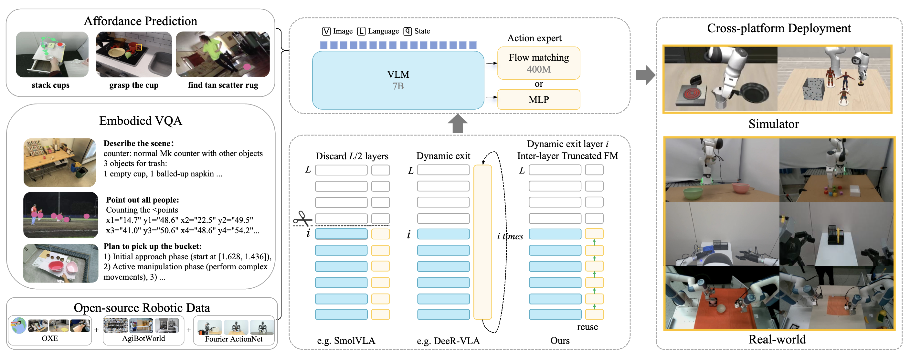

Jingming Zhang 张景鸣
I'm a senior undergraduate student @Beijing Normal-Hong Kong Baptist University in Zhuhai, China.
I'm currently a visiting intern @Carnegie Mellon University, advised by Prof. Min Xu, where I work on automation and safety for robots in laboratory settings.
I also work closely with Prof. Xu Zhang on tactile sensing for robots.
Previously, I interned @ATeam, advised by Prof. Xiaodan Liang, and @PKU-Agibot Lab, advised by Prof. Hao Dong.

Research
I'm a rookie in the field of Robotics and Embodied Intelligence.

A1: Adaptive Truncated Vision-Language-Action Model from Affordance to Action
CVPR 2026 Findings
Experience
-
Jul 2026 – Present
Visiting Intern, Carnegie Mellon University
Advised by Prof. Min Xu; working closely with Prof. Xu Zhang.
-
Aug 2025 – Oct 2025
Research Intern, ATeam
Advised by Prof. Xiaodan Liang.
-
Jun 2025 – Sep 2025
Research Intern, PKU-Agibot Lab
Advised by Prof. Hao Dong.
-
Sep 2023 – Present
B.Sc., Beijing Normal-Hong Kong Baptist University
Zhuhai, China.